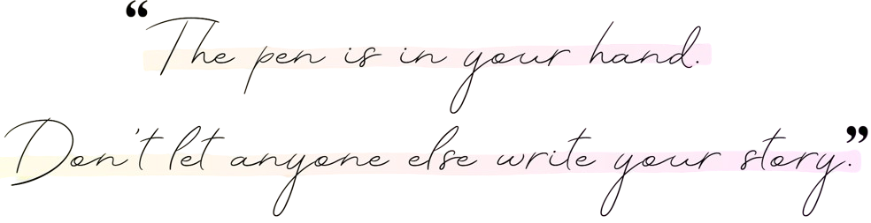
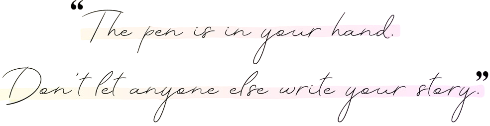
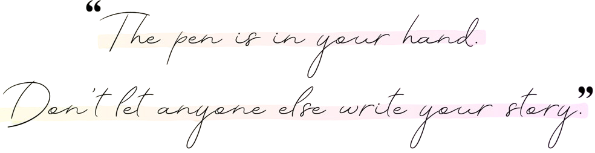

A journey of finally coming
home to myself

 


A journey of finally coming
home to myself

For a long time, I lived life on autopilot - moving through each day by following what I was taught, believing what I was told, and trying to fit into roles and expectations that simply were never made for me. I measured my worth by how others saw me - their opinions, comparisons, and expectations (I’m sure a lot of us brown girls can relate to this).
Growing up, I was constantly compared to my sister, whether at home, school or even in mundane places like salons, and slowly over time, I internalised the belief that I simply wasn’t enough. That belief settled quietly but deeply, shaping years filled with self-doubt, where I questioned my voice, my decisions, and even the core of who I was.
It was a heavy weight to carry, and for many years, I felt trapped by it - a kind of learned helplessness where trying felt pointless because I thought my efforts wouldn’t change anything.
But life has a way of surprising us...

Everything began to shift when I met someone who saw me - not through the usual filters of comparison and expectation, but truly and kindly.
My partner believed in me in a way that made me want to believe in myself again.
For the first time, I had the space and safety to ask: Who am I - beyond all these roles I’ve been given? What do I want my life to look like?
These questions were new and daunting, but also full of possibility.
One day, I randomly came across footage from a slaughterhouse - and I froze. The footage shook something deep inside me. For the first time, I began to truly reflect on the things I’d grown up accepting, the traditions I’d never thought to question.
It wasn’t easy to sit with, but it opened a door to clarity. I realised I wanted to live in a way that aligned with my values - especially my love and respect for animals. That’s when I chose to explore a vegan lifestyle. It wasn’t about following a trend or chasing health goals - it was simply about choosing compassion where I could.
Growing up with pets, I always saw animals as individuals - with quirks, feelings, and their own little ways of showing love. That connection made it harder to turn away from what I’d seen. And it reminded me that animals aren’t so different from us in the ways that matter.
Choosing this path has been about living with more awareness and intention. Not asking What should I do? but What feels right? Is there a kinder, more conscious way to live? For me, the answer was yes - and it’s been a journey of alignment, learning, and heart-opening ever since.
In 2019, I moved to Australia to pursue my Bachelor’s degree in IT. Back in Sri Lanka, netball had been a big part of my life for nearly ten years. After stepping away from it for three years, I missed the game and the joy it brought me. So, I joined my university’s indoor netball team, feeling like I was reconnecting with a part of myself I’d lost touch with.
But it wasn't long before everything changed forever...
During a final match, I had a freak accident and I fractured my femur. It was a sudden, random injury - completely unrelated to my strength or health. Several medical scans later confirmed that my bone density was well above average (BMD: 1.3 g/cm²). So I guess I was just not meant to take home a gold medal that night :/


Around that time, I had just begun to truly explore who I was. Leaving Sri Lanka gave me a sense of freedom I never had before - for the first time, I wasn’t just someone’s sister. I was finally ... me.
It wasn’t until university that I realised how much the absence of constant comparison could change me. Without the weight of being measured against someone else, I could finally breathe, explore, and grow at my own pace. For the first time, I wasn’t standing in anyone’s shadow - I was simply walking my own path. My uni professors saw me for who I was, recognising my potential in a way I had never experienced in school. That freedom opened a door I didn’t know existed, and I found myself achieving more than I ever thought I could.
I also started learning how to care for my natural curly hair (something I was taught to despise growing up) and I began to embrace my skin tone, which I had also been conditioned to see as less-than. And ironically, it was this fracture - this painful, unexpected moment - that brought me even closer to my true self.
Instead of breaking me, it woke me up. It empowered me.
After years of being told to follow someone else’s footsteps, I was finally walking my own path - even if I had to limp for a while to get there.
The injury, though painful, brought a stillness I’d never allowed myself before. And in that quiet, I found my way back to the piano - not the structured, theory-heavy way I had been taught, but the kind I used to play as a child: by ear, by heart, by feeling.
This raw, emotional reconnection led to my debut piano composition, Featherfall - a piece born from healing and rebirth.
The stillness my injury brought became an unexpected teacher. It not only gave me the space to reconnect with the piano but also opened the door to training my upper body more often, since I had to slow down and ease off lower-body training. That’s when I stumbled into the world of calisthenics - a discovery that completely reshaped how I saw fitness.
As I moved through rehab, I discovered something even deeper: the power of the body and mind. The injury became a pivotal turning point in my life, one that could have easily led me down a completely different path. but in moments like this, we’re given a choice. We can nourish our bodies, stay patient and consistent through the process, feed our minds with thoughts that lift us higher, and grow - or to turn away, let frustration take root, and slowly diminish.
Choosing the first path showed me, in the most undeniable way, the extraordinary power that lives in both the body and the mind.
Being bedridden for a week also reminded me just how much of a privilege movement truly is - a gift we so often overlook, until it’s no longer ours.
That lesson has stayed with me. I no longer train to chase extremes or prove anything to anyone. I train with intention, with awareness, and with gratitude for what my body can do today. Every rep, every stretch, every breath is my way of honouring that gift.

Just Jana was born from this whole journey - from breaking down and rebuilding, from unlearning and reconditioning, from doubt to identity.
It’s a sacred space to come home to yourself. A reminder that you are enough - not once you’ve changed, but as you are.
Reclaiming myself has been the most life-changing thing I’ve ever done. I know what it’s like to live in learned helplessness. I know what it’s like to feel invisible. Growing up, I didn’t have the space to uncover who I really was, and so now I’ve created one for us - a space to feel seen, safe, and enough.
I want you to feel the empowerment that comes from reclaiming your story. I want you to experience what it means to truly love and embrace your authentic self - not the version others expect, but the one you know deep down you were always meant to be.
Just Jana is not about changing who you are - it’s about peeling back the layers, healing through what speaks to you, and coming home to yourself. Whether it’s through fitness, music, or simply living with more awareness - there’s something here for everyone.
This is not just my story - it’s a mirror for anyone who’s ever felt like they were too much, not enough, or lost in someone else’s shadow.
If any part of this story resonates with you… welcome. You’re not alone - and you’re exactly where you need to be!
With you, always - Jana ♡